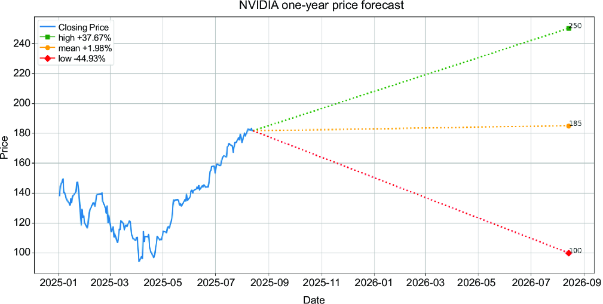
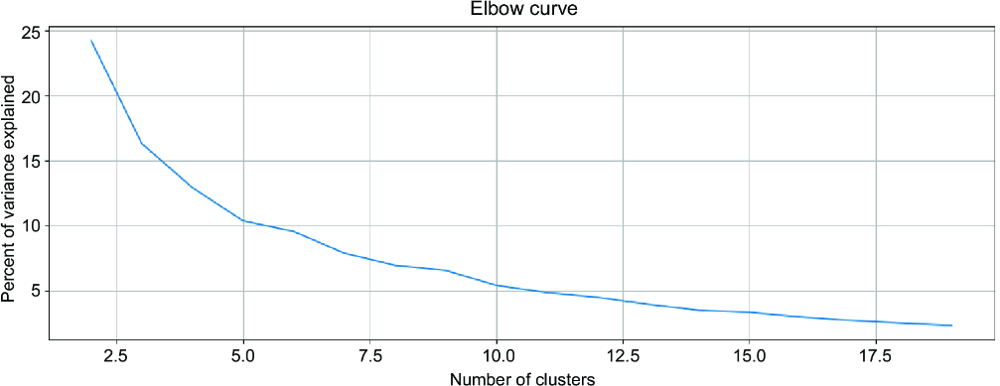
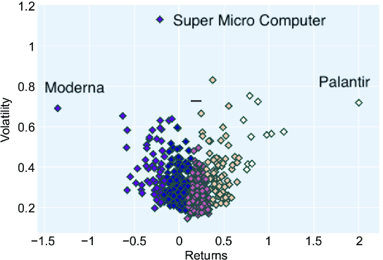
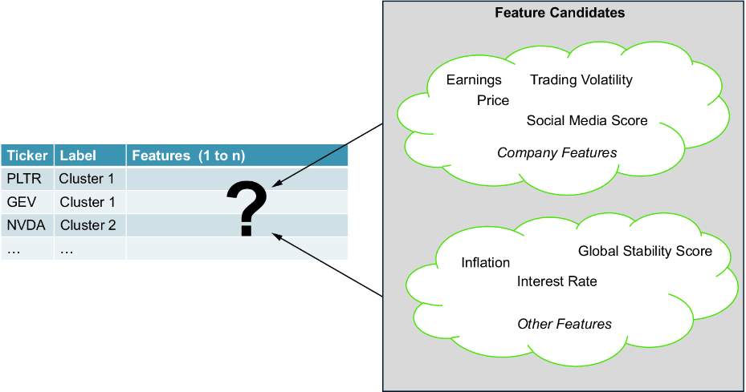
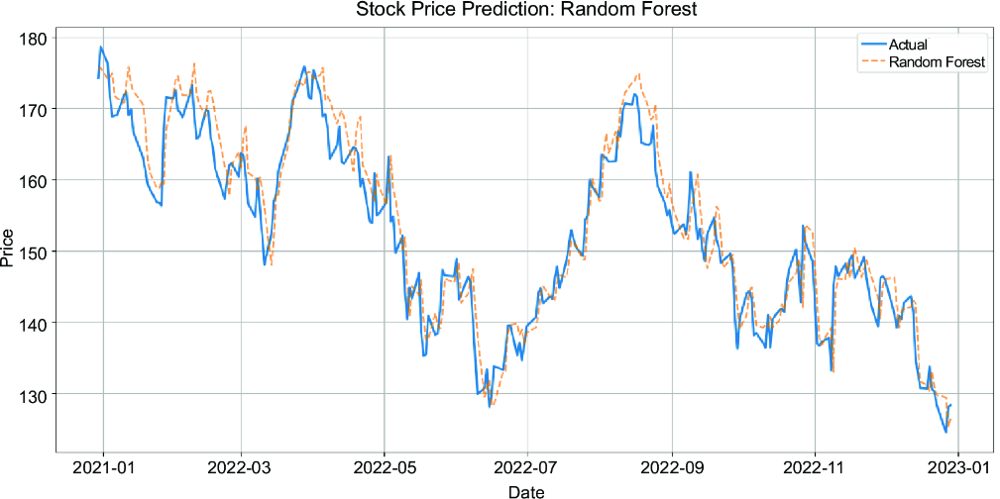
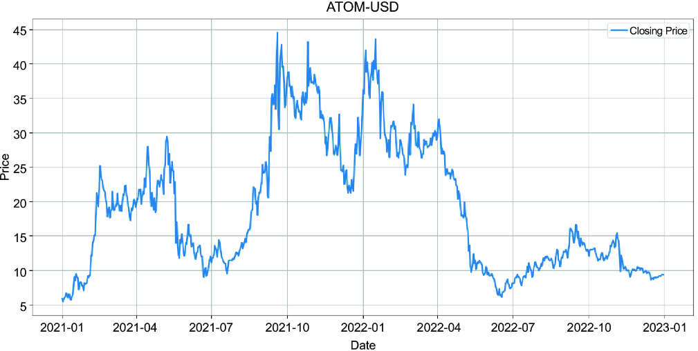
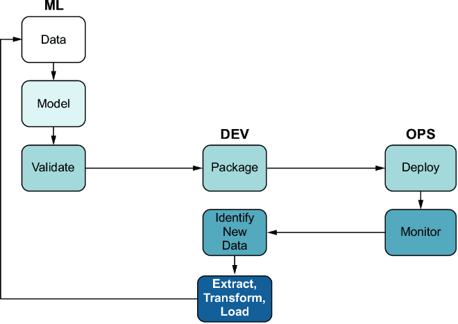
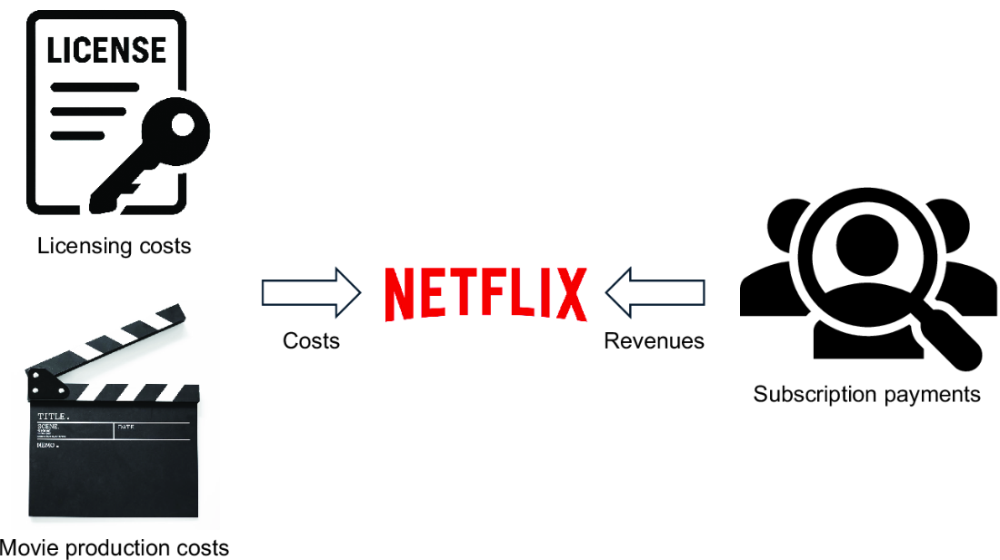

Let’s start this chapter with a radical idea: What if we stopped using code for financial research and relied on generative AI (GenAI) chatbots for investment advice? We can ask a large language model (LLM) questions such as “I am a risk-averse investor, and I want to invest in stocks in the Information Technology sector. What are three stocks with maximized returns and minimized risks?” Would you buy the three recommended stocks without additional due diligence?
This chapter examines the discriminative applications of machine learning (ML) in finance in the first part. We’ll highlight the limitations of linear regression and similar algorithms in chaotic systems, such as stock prices, which often lack patterns and are typically characterized by “random walks.” We’ll also outline how these algorithms can be used meaningfully in more isolated scenarios.
When introducing LLMs later in the chapter, we’ll emphasize that mindlessly following an LLM’s investment advice is risky due to the potential for hallucinations and outdated information. We will, however, highlight the usefulness of GenAI in financial research, particularly when seeking to gain a deeper understanding of a company that presents an investment opportunity. In simplified terms, instead of getting particular investment advice based on a generic question, such as “Recommend me three stocks,” we can pass more detailed inquiries such as, “Tell me about the management style of the management board of company X.” With answers to a lot of company details, we can build an individual scorecard about a company to make an investment decision.
We’ll demonstrate how to integrate LLMs from organizations such as Google (Gemini) and OpenAI (GPT), as well as open source models from Hugging Face, and how to configure specific parameters for these models. While the book has been programming-oriented to this point, we’ll now find out how to automate insight generation.
In the past chapters, we’ve demonstrated how to analyze companies to hypothesize which ones are better suited for investment. Regardless of our algorithms and strategies, we can justify our actions if our approach is grounded in evidence-based decision-making.
Note Using terms such as hypothesize instead of stronger words, such as judge, can serve as a reminder to stay aware of the room for error. Even the most successful investors have misjudged investment opportunities in the past, and it’s helpful to remember that we often follow assumptions when investing in volatile assets. Overconfidence in your ability to predict the future is a form of self-deception that can lead to unexpected losses and painful lessons.
Using computer-generated models trained on vast historical data, we delegate decision-making processes to algorithms at an advanced stage of automation. Humans might not even understand why the model decided to buy or sell, as they are black boxes. Investors will appreciate sophisticated trading algorithms that automate profits, but a trading bot that incurs losses after market changes is a trader’s nightmare. Let’s delve into the details of traditional ML to gain a deeper understanding.
ML involves statistical algorithms that learn from data and perform tasks without requiring explicit instructions. These algorithms can be categorized into trained models that use supervised and unsupervised learning.
Supervised ML models are trained with labeled data. Imagine a dataset that contains quantifiable financial data about a company in columns, which are called features, tagged with an indication of whether the stock price is higher or lower one year later—the label. With a supervised learning algorithm, we can train a model that predicts whether a stock will increase or decrease in value when the model is fed unlabeled data. Depending on the direction of the stock price, we can label the stock as “buy,” “sell,” or “hold.” We can also classify stocks as strong buy or strong sell if an analysis concludes that the stock might move above average when we compare the expected performance with other stocks. This example represents a classification approach. Another similar approach is regression; instead of classifying as buy or sell, we estimate the stock price changes in percentage terms (returns) over one year.
Note In investment theory, the term factor is used for parameters that can affect trade decisions, such as value, size, momentum, quality, or volatility. Factors are typical candidates for features in analytical datasets for data models.
To train a model, we need labeled data, but what if the data isn’t labeled? Unsupervised learning is about finding structure in data, and we’re successful if we can find ways to label the data meaningfully. Shares of companies are a perfect textbook example to illustrate the applications of unsupervised learning, as we can extract two key values from the time series data on share prices: returns and volatility. We’ll illustrate in the upcoming example how to plot this data and create labels by clustering the data on the plot.
Identifying outliers —assets with distinct values from others—can bring value to investors with a higher risk appetite. We’ve found an asset that might behave differently from other assets on the market. If we strongly believe in the stock’s growth or decline hypothesis, we might buy or short sell it.
Investment firms use ML to analyze stocks. They collect historical data and forecast earnings, revenue growth, and, of course, stock prices. Financial data providers often provide investors with an average of the forecasts of different companies. Figure 8.1 shows the NVIDIA price forecast based on data collected via yfinance.

In this figure, we collected someone else’s forecasts and plotted them. As past performance doesn’t guarantee future results, forecasts can be wrong. To improve the likelihood of success when deciding based on analyst forecasts, details on historical performance facilitate decision-making. The more successful selected analysts have been in the past, the more likely it is that their next forecast is solid too. Sharing the historical performance of investment analysts who shared their insights is one of the key features of paid pro subscription services of financial analyst platforms.
We also want to understand how to create models ourselves to predict prices. Before investigating that, let’s explore how to use unsupervised learning.
Stock market indices are often used as an entry point to analyze individual stocks, as they already list a preselection of promising stocks. The S&P 500, for example, tracks the stock performance of 500 of the largest companies listed on US stock exchanges. It would be inefficient to examine each stock in the index manually. Let’s see if we can improve our results using Python code.
What if we clustered stocks by performance and picked more interesting ones for us? We focus on stocks with excellent past returns and explore them first. Let’s load the S&P data to visualize stocks based on their performance using code. The following code retrieves the tickers of S&P 500 constituents from Wikipedia using Pandas to parse HTML pages:
sp500_url = 'https://en.wikipedia.org/wiki/List_of_S%26P_500_companies'
data_table = pd.read_html(sp500_url)
tickers = data_table[0]['Symbol'].values.tolist()
tickers = [s.replace('\n', '') for s in tickers]
tickers = [s.replace('.', '-') for s in tickers]
tickers = [s.replace(' ', '') for s in tickers]
In the second step, we load all constituent performances from the current year. We iterate through the tickers and load stock price data in listing 8.1. For each stock, we load one year of data.
prices_list = []
start_date = datetime.now() - timedelta(days=365)
for ticker in tickers: #1
prices = yf.download(ticker,
start=start_date,
interval="1d")['Close'] #1
prices = pd.DataFrame(prices) #1
prices.columns = [ticker] #1
prices_list.append(prices) #1
prices_df = pd.concat(prices_list,axis=1)
prices_df.sort_index(inplace=True)
returns = pd.DataFrame()
returns['Returns'] = prices_df.pct_change().mean() * 252 #2
returns['Volatility'] = (prices_df.pct_change().std()
* sqrt(252)) #2
Note In the code here, 252 represents the trading days per year. Stock exchanges are closed on weekends and public holidays. Therefore, the number of trading days is lower than the total number of days per year.
Using this code so far, we have a data structure that contains the returns and the volatility aggregated by a year. While the purpose of the returns is clear (we want to maximize our gains), volatility represents risks. The greater the fluctuation in a stock’s value, the higher the risk.
Note Is high volatility also a risk, if an ongoing upward momentum causes substantial price changes? We need to verify that your soaring stock isn’t part of a bubble and check ratios to see if a high valuation after a rally remains justified.
K-means clustering is a vector quantization method to partition data into clusters. By grouping data by values, we can create labels. A central parameter for this algorithm is the number of clusters we want to make. An elbow curve, as shown in the following code, helps us determine the optimal number of clusters. Listing 8.2 illustrates how to do this, and the results are presented in figure 8.2.
data = np.asarray([np.asarray(returns['Returns']),
np.asarray(returns['Volatility'])]).T
distortions = []
for k in range(2, 20):
k_means = KMeans(n_clusters=k)
k_means.fit(data)
distortions.append(k_means.inertia_)
fig = plt.figure(figsize=(15, 5))
plt.plot(range(2, 20), distortions)
plt.grid(True)
plt.title('Elbow curve')
Figure 8.2 illustrates the outcome of the elbow curve. Here, we also see a dent in the chart that gives the curve its name.

Based on that graph, we pick a number close to the elbow of the curve, which is a point where the curve visibly bends. The elbow represents a cutoff point, indicating that the diminishing returns aren’t worth the additional costs. It’s therefore an optimal parameter. In the following example, we use 5. Let’s create the data for this cluster using the source code in listing 8.3, which uses the K-means algorithm.
centroids,_ = kmeans(data, 5) idx,_ = vq(data,centroids) details = [(name,cluster) for name, cluster in zip(returns.index,idx)] details_df = pd.DataFrame(details) details_df.columns = ['Ticker','Cluster'] clusters_df = returns.reset_index() clusters_df['Cluster'] = details_df['Cluster'] clusters_df.columns = ['Ticker', 'Returns', 'Volatility', 'Cluster']
Listing 8.4 shows how to plot the data. Stock tickers can be seen if we hover the mouse over the dots on the plot visualized in figure 8.3. It’s possible to add the labels for each stock, but with 500 constituents, the diagram would be too crowded with small text labels.
fig = px.scatter(clusters_df, x="Returns",
y="Volatility", color="Cluster", hover_data=["Ticker"])
fig.update(layout_coloraxis_showscale=False)
fig.update_traces(
marker=dict(size=8, symbol="diamond",
line=dict(width=2, color="DarkSlateGrey"))
)
fig.show()

This example demonstrates the application of unsupervised learning to categorize stocks into clusters based on shared characteristics. If we interactively examine this scatterplot, we can draw conclusions by exploring each dot. We can explore each asset and decide which one to investigate further. We can, for example, review the three outliers. The dot on the left (Moderna) could be an interesting option if we look for companies that can undergo a turnaround. We may also choose high-performing assets to pick winners that can grow further and explore the dot on the right, such as Palantir. We’re also interested in the stock with the highest volatility, which in the scatterplot is Super Micro Computer. Regardless of the strategy we use, being able to hover over each dot provides a more straightforward overview of the differences in the assets available to us.
Unsupervised learning helps us better understand assets. Let’s examine supervised learning to determine whether it can predict stock future performance.
Unsupervised learning helps us bring meaning to chaos by structuring vast data. Once labeled data is available, it’s time to think about the next steps, which leads us to supervised learning. Let’s build an analytical dataset using these labels and learn how to predict which companies are likely to become winners.
Based on the previous scatterplot, we can create labeled datasets. Each stock, represented by the ticker, is part of a cluster. The cluster with the highest returns in the exploration before contains the tickers PLTR (Palantir), GEV (GE Vernova), AXON (Axon Enterprise), TPL (Texas Pacific Land Corporation), TSLA (Tesla), VST (Vistra Corp), NRG (NRG Energy), TPR (Tapestry Inc), AVGO (Broadcom), PODD (Insulet Corporation), and HWM (Howmet Aerospace). We can use this grouping as a label for all tickers in the dataset.
We have identifiers (tickers) and labels (clusters); now we need to identify the features associated with these identifiers. In this use case, we must create a 2D analytical dataset to run a supervised ML algorithm on data, such as linear regression. Think of a traditional database table with columns representing the features we want to investigate. One additional column represents the label or the outcome; in this case, it’s the cluster. Here, the ticker serves as the unique primary key. We want to use supervised ML algorithms to find correlations between the values of the features and the labels with the help of a significant amount of data. In figure 8.4, we outline using supervised ML to find promising stocks using linear regression. The challenge is to select the best features from a vast list of potential candidates.

Every quantifiable aspect that can, at least in theory, affect a share price can become a feature in an analytical dataset. We can pick features based on financial data such as historical share prices, expenses, or earnings. During feature selection, we can go far beyond corporate data, including financial and nonfinancial data. We can include macroeconomic data such as the unemployment rate, inflation, or economic growth as features. Some features can also be specific to ML models for certain sectors, such as weather data for companies whose success depends on it, like those in the agricultural industry.
Note The more specific attributes we use, the narrower our scope needs to be. If we use weather as a feature, we must incorporate only companies that rely on weather data, such as those in the agricultural industry. Otherwise, if most companies are unaffected by weather data, we exacerbate the signal-to-noise problem.
Choosing the label—the intended outcome—is easier than selecting features, as we aim to identify company stocks with rising share prices. Once we’ve chosen the desired features, we construct a time series dataset using these features. We also need to determine a suitable time interval for assessing price movements. Stock markets are highly volatile, so using ML to predict movements in short time frames, such as days or a few weeks, isn’t advisable. At the same time, for some industries, having a time interval that is too large can also be troublesome, as some changes within the time interval may render certain features obsolete (consider how the emergence of AI reshuffled the cards for some companies). Candidates for time intervals could be quarters, semiannual periods, or annual periods.
The next step is to collect and aggregate historical data. Suppose we decided on a one-year time frame. We then collect data from all the companies in our analysis from one year ago. Once we have this dataset, we run supervised ML algorithms.
When we have enough data, we split the data sample into two groups: training data and test data. We use a ML algorithm, specifically a linear regression algorithm, to train the model using the training data. In simplified terms, the algorithm processes the data and identifies correlations between the features and the label.
After the training, we can use this model for inference. We feed an unlabeled dataset to the model, and the model returns a likely outcome. As we’ve kept the test data aside, we can now test our model. The more the model’s inference matches the labels, the more accurate our model is.
Many hedge funds base their stock selection on this approach. However, practical wisdom also suggests that if a few features were sufficient to predict prices and success were easy, every book exploring financial investment would begin with a chapter on ML. Succeeding using ML can lead to vast profits, but it’s also hard. Let’s look at some details on why being successful in this field goes beyond a showcase.
The cluster we created contains one year of data up to May 13, 2025. This portfolio shows a diverse range of businesses across stable sectors, including industrials and consumer discretionary, in clusters containing shares whose prices have grown. If we created a cluster with one year of data up to January 1, the cluster containing profitable shares would likely include a far greater number of stocks in the technology sector.
Note The code in the download section of this book allows you to use different end dates to create clusters.
So, what happened? A new US president with new policies shook up the stock market. When the tariff policies were announced, the share prices of technology stocks that depend more on other international markets were more affected than those of companies such as Texas Pacific Land Corporation, whose business is less dependent on international trade. Consequently, we must remain flexible and consider training multiple models in parallel.
Another challenge is the volume of data and the associated data preparation. In this example, we used the S&P 500, which is a collection of successful companies. The business model of hedge funds is to generate substantial returns for clients, providing a solid foundation for the fund manager to enrich themselves through fees. The smaller the company, the greater the chance of profits. Therefore, we need to investigate companies beyond the S&P 500. Collecting and aggregating data is a significant topic in big data. Depending on the number of features you want to support, you must build data pipelines to load data from various sources, including social media, financial documents, and many more. Having a vast amount of data also requires many resources to process it. Lastly, overfitting is one of the challenges of supervised learning and ML. ML models still face the challenge of distinguishing the signal from the noise.
If you come up with great ideas and possess the skills in ML, there’s still considerable room to create ML models that perform well. However, let’s consider a simpler scenario for a showcase instead.
We’ll outline this approach with a reference example that uses a random forest algorithm in listing 8.5. In the preceding example, we outlined the use of several fundamentals to predict the outcome. This was great to explain the power of supervised learning, but we want to use a more straightforward and reproducible scenario for a practical approach using historical pricing data. We load data through yfinance, as we’ve done before. The interesting aspect is to define a label by setting the column target with the next day’s price. This way, we create a training dataset.
import yfinance as yf import pandas as pd import numpy as np from sklearn.ensemble import RandomForestRegressor from sklearn.model_selection import train_test_split from sklearn.metrics import mean_squared_error from statsmodels.tsa.arima.model import ARIMA import matplotlib.pyplot as plt start_date = "2018-01-01" end_date = "2023-01-01" ticker ="AAPL" df = yf.Ticker(ticker).history(start=start_date, end=end_date) df = df[["Open", "High", "Low", "Close", "Volume"]] df["Target"] = df["Close"].shift(-1) df.dropna(inplace=True)
Now, it’s time to split our data into training data and test data. In listing 8.6, we first define the datasets X and the labels y. We use 80% of the training data, leaving 20% for testing to validate the model. We collect the output. The variable rf_rmse contains the root mean-squared error, which indicates the model’s accuracy based on validation using the test data.
X = df.drop(columns=["Target"])
y = df["Target"]
X_train, X_test, y_train, y_test = train_test_split(X, y, shuffle=False,
test_size=0.2)
rf_model = RandomForestRegressor(n_estimators=100, random_state=42)
rf_model.fit(X_train, y_train)
rf_preds = rf_model.predict(X_test)
rf_rmse = np.sqrt(mean_squared_error(y_test, rf_preds))
results = pd.DataFrame({
"Date": df.index[-len(y_test):],
"Actual": y_test.values,
"RandomForest": rf_preds,
}).set_index("Date")
Listing 8.7 lets us plot the results. The x-axis represents the data, and the y-axis represents the price.
plt.figure(figsize=(12, 6))
plt.plot(results.index, results["Actual"], label="Actual", linewidth=2)
plt.plot(results.index, results["RandomForest"], label="Random Forest",
alpha=0.7, linestyle="dashed")
plt.title("Stock Price Prediction: Random Forest")
plt.xlabel("Date")
plt.ylabel("Price")
plt.legend()
plt.grid(True)
plt.tight_layout()
plt.show()
Figure 8.5 shows the differences between the forecast and the actual values, which underline that inaccuracies sometimes occur and are sometimes more pronounced than others. If you experiment with data, you may often run into scenarios where predictions are inaccurate. Sometimes, the solution is to use more data. You can also try other ML algorithms, such as AutoRegressive Integrated Moving Average (ARIMA), which may yield more accurate results on several occasions.

We can compare a reliable model for forecasting stock prices with the Midas Touch, an allegory for the ability to make people extremely rich quickly. Although a few entities, such as RenTech (we’ll fill you in on this company a bit later), are said to have this capability, building efficient stock forecasting algorithms is tough. Let’s look at the challenges.
The financial market provides advantages and disadvantages for ML use cases. One advantage is the quality of data and access to audited data. Those who want to showcase ML can use financial data more easily than any other data source for simple demonstrations.
The financial market also presents challenges for ML use cases. Let’s start with the efficient market theory and explore other aspects that make forecasting prices more difficult.
The efficient market theory posits that the price of an asset accurately reflects its intrinsic value, given that investors have access to all relevant information. This leads to one of the most debated and controversial theories in finance: nobody can beat the market in the long run by purchasing undervalued stocks. Warren Buffett and other investors who outperformed the stock indices disagree.
Suppose we agree that we may not find any undervalued stocks of well-established companies. In that case, we can only outperform the market if we identify newcomers that will surpass others through a hidden advantage that we can reveal through new analytical approaches. In his “Do Stocks Outperform Treasury Bills?” paper (https://mng.bz/KwrZ), Hendrik Bessembinder showed that most stocks of the historical stock market had negative cumulative returns. A few companies that create exceptional returns enable the stock market to outperform the average returns of other assets, such as bonds. Many investors have searched for decades for companies with “a secret sauce.” However, if we sought features in a ML model that would reveal hidden qualities in a company, ML models based on past performance numbers would likely only provide limited assistance.
A random walk describes how the stock market often doesn’t follow deterministic rules but does exhibit chaotic behavior. Benjamin Graham, Warren Buffett’s mentor, created the allegory of Mr. Market, in which he compares the stock market to a person with manic-depressive traits. Changes in single markets, such as the US market, the world’s largest, can impact other markets worldwide. This makes prediction even more complex. Because stock prices depend significantly on mass psychology, attempting to predict human emotions on a global scale through ML ultimately leads to speculative approaches, akin to consulting the stars.
The phrase “irrational exuberance,” coined by Alan Greenspan and often used by Yale professor Robert Shiller, outlines that investors frequently don’t act rationally. It seems to be a universal rule of investment that, investors repeatedly become greedy and put their hope in one new trend that will make them immensely rich; the famous tulip mania of the 17th century in the Dutch Republic is often quoted as a reference to a bubble.
Some investors attempt to counteract irrational exuberance by investing for the long term. They examine business models and other factors, such as a company’s economic moat, and select only companies that meet sufficient quality criteria to withstand all market fluctuations. However, the integration opportunities of ML algorithms based on time series data for such specific decision-making scenarios are often limited or require more effort than usual to be successful. For this reason, many strategies based on randomness, such as Monte Carlo simulation, are helpful when examining stocks.
Some data sources, such as social media sentiments, weren’t available in the more distant past, and we would hardly be able to collect information on what the masses thought about Coca-Cola or other stocks in the 1980s at specific times.
Companies in the past had vastly different environments regarding available technology, regulations, and taxes. Integrating computers, the internet, and AI has impacted how companies operate. Successful ML models from the past must be retrained and improved to stay competitive.
Decades ago, only a few companies would have considered writing an environmental, social, and governance (ESG) report to outline that they weren’t purely profit-oriented. Not being concerned about maximizing profits could have been seen as a weakness during more competitive periods. Today, analysts and ML models weigh in on ESG factors, and at some point, ESG performance may impact a company’s stock price similarly to its earnings results.
Note Some analysts consider ESG factors to be political. Companies adjust their diversification and environmental policies in response to a country’s governmental trends. Purely profit-oriented investors will also include ESG ratings in decision-making if share prices are affected by companies’ unethical behavior.
In chapter 3, we stated that some quarters of the year create different economic outputs. For industries such as retail, the Christmas season has a different impact than the summer holidays. Some companies can face severe problems if a new product flops near the end of the year, even if the numbers in the preceding months had been impressive.
Assuming we create models that predict the stock price annually to bypass seasonality, we still face economic cycles. A stock price forecasting model trained during a recession might deliver different outputs than models trained in a bull market. Companies focusing on automated trading, such as Renaissance Technologies (RenTech) mentioned earlier, have faced challenges due to changing market trends. Models that had previously produced profits suddenly started to incur losses overnight.
Although we learned in chapter 3 that companies must follow accounting standards, companies still have some flexibility in presenting numbers within these standards. Companies regularly reassess their strategies, and new executives may adopt new approaches to achieve greater success than their predecessors. Those responsible for achieving the goals will also strive to ensure that their efforts to fulfill this strategy are reflected in the numbers, thereby pleasing shareholders. These different accounting strategies are a challenge for ML algorithms.
If we examine companies that have existed for decades, such as IBM or General Electric, we also observe that their focus shifts over time. Can we use the past as a reference if the overall strategy within a company changes? Likely not.
Historically, we know there have been numerous manias and bubbles, in which investors no longer acted rationally. Let’s look at Cisco as a reference for a company that existed during the dot-com bubble. At its peak in 2000, the stock price was above $77, and this price has never been reached again. We need to detect these phases of irrational exuberance and ensure that a model can detect trends that might not be sustainable in the long run.
Although we have numerous success stories of a few champions who used ML to achieve outstanding performance, we also have reference stories of companies that exclude ML due to technical challenges in forecasting prices. Let’s look at some of them.
Figure 8.6 shows the price of an asset over time. At the beginning and end, the asset’s price is close to where it started. Without knowing what happened in between, we could also assume that the price of this asset is stable; however, we wouldn’t be aware that the price has moved significantly.

Of course, we can always investigate volatility by collecting daily returns over time, conducting statistical analysis, and incorporating this aspect as a decision factor. Still, stock volatility makes it more challenging for ML algorithms to identify strong assets.
Chapter 3 highlighted the many ratios that could be explored to assess a company’s performance. All of these ratios are potential candidates for ML features. Besides the fundamentals and technical data, such as the stock price, numerous external factors, including the country’s overall economic situation, social media sentiments, news, weather, insider trades, and more, can also influence the stock price.
If we select a minimal number of features, we risk underfitting, which occurs when a ML algorithm fails to identify strong correlations between the features and the label. Considering the vast number of possible features, we also risk failing due to the opposite by overfitting the models if we add too many features. Some statisticians often speak of the signal and the noise. Features that aren’t interesting—the noise—frequently prevent us from seeing the factors we would need to see to predict an outcome, the signal.
If we train and update multiple models regularly, we must find efficient practices to manage them well. Models need to be versioned, and it must be possible to redeploy every historical model if necessary. Changes in models also need to be transparent so that we can better understand how they have evolved in retrospect.
In addition, companies in various industries and sectors exhibit significant differences, as illustrated in chapter 3. A model that works for one industry may not be effective in another. So, we would have to create specific models for separate industries and sectors, making the process even more complicated, as we need to maintain many models in parallel.
Figure 8.7 shows the MLDevOps Cycle. This picture illustrates the entire lifecycle of model generation, encompassing data exploration and deployment options. We collect and prepare data, and then build and validate ML models. Once validated, the model is versioned, packaged, and deployed to a production environment. New results are continuously collected in this operational setting, enabling us to refine our understanding of model performance. New data sources are identified and integrated as the process evolves, feeding the next model development cycle.

In larger organizations, the efforts required to maintain models can become immense, slowing down overall progress within the company. It’s one task to create models, but another to maintain them to avoid chaos.
A ML model that accurately forecasts all stock prices would be like the golden goose from the fairy tale, and the universal money-making formula, of course, doesn’t exist. Many companies successfully use ML use cases for more isolated scenarios. If you apply your skills wisely and focus on the right goals, there are plenty of chances to predict future gains better than others. Let’s look at a narrowed use case.
A business model describes how a company generates revenue and achieves economic success. For example, Netflix and Spotify have subscription-based and advertisement-based revenue models. The goal is to maximize the number of users who pay a monthly subscription fee.
We can develop specific ML models to measure success, incorporating generic economic data, sentiments, and other data sources to predict industry outcomes. Such a model can’t eliminate all risks, such as mismanagement or geopolitical changes, but it can help assess possible results for a market niche.
ML is part of discriminative models. We expect them to return quantitative results, such as a binary classification (e.g., “yes”, “no”, “up”, or “down”) or a number based on a regression algorithm, which forecasts the likely future share price of an asset. Suppose a ML model recommends we sell company shares of a company that we believe has the brightest future imaginable. The output format will always be the same; the results won’t contain any creative analysis but will indicate buy, sell, or hold. Traditional ML won’t explain its reasoning. The adage “Every use case has its best-suited tool, but not every tool is suitable for every use case” applies. Discriminative ML frameworks can be beneficial for use cases where no creativity is required. If you, for instance, plan to build a robo trader to automate transactions to trigger orders based on the data on the market, traditional ML use cases will provide the value you need. Now, it’s time to investigate a different form of AI that generates new results, which we could also call creative in some cases, addressing different use cases.
ML has a specific use case. Models trained for forecasting stock prices, as a representative of discriminative AI, can’t be used in other scenarios. In contrast to the discriminative models we’ve seen, GenAI targets universal applications. It’s self-evident that an ML model trained for different use cases, such as medical applications, can’t predict stock prices. However, if we asked a public LLM, such as OpenAI GPT or Google Gemini, any question, whether it’s about finance or other topics, in most cases, we get results that at least sound right.
So, what makes GenAI so different? The obvious answer is that, when examining chat use cases, using an LLM to generate answers is an advanced natural language processing (NLP) use case, and its purpose, techniques, and applications fundamentally differ from those of a linear regression use case, which aims to predict trends in a stock price. Traditional NLP applications can be compared with house cats, whereas LLMs could be seen as big cats. But in that context, comparing GenAI using LLMs and ML is like comparing cats with mice. Both are mammals; they share a commonality, just as LLMs and ML are part of analytics, but they are still distinct species.
Conversely, we still explored the possible limitations of computer-generated models in a chaotic domain, which gives an excellent idea of what to look for when researching a different analytical domain. GenAI, although “a different species,” is another form of computer-generated model, and it makes sense to examine whether the same limitations apply.
We won’t go into the details in this book, but here’s two books that describe how the transformer model and attention algorithms have become game changers: Generative AI in Action by Amit Bahree (Manning, 2024; www.manning.com/books/generative-ai-in-action) and Introduction to Generative AI by Numa Dhamani and Maggie Engler (Manning, 2024; www.manning.com/books/introduction-to-generative-ai). To summarize the evolution, a paper called “Attention Is All You Need” (https://mng.bz/Pw55) suggested an improvement when building text-based models. Instead of exploring the relationship between every word in a sentence, the idea is to focus on the relationship between the essential words in sentences. This led to the transformer model. This new approach allowed us to collect vast amounts of data and provides the basis for LLMs, which are trained by millions of parameters.
Let’s start with an experiment. We’ll ask GPT-4o, Gemini, and Finance Chat about investment strategies. We’ll provide the following three prompts related to investment and compare the differences in the answers provided by the LLMs:
This chapter summarizes the results, highlighting that LLMs aren’t infallible. This test run was executed in June 2024, before the market experienced some losses in August 2024, from which it largely recovered. Note that one challenge using LLMs is nondeterminism. Different users may receive different answers depending on the LLM they use and the parameters they specify.
Although Gemini and GPT also raised concerns, all LLMs painted a positive picture of the market. They advertised to investors to diversify their portfolios, which is standard advice most financial advisors give. No LLM provided a strategy that would have prevented us from experiencing the hiccups in August 2024. There are some investment recommendations, such as using passive investment methods, but this advice is one of the most common recommendations investment experts give to new investors.
The answers to specific questions about Warren Buffett’s and Peter Lynch’s investment strategies are more conclusive. Both are investors who follow a particular approach. Peter Lynch was a growth investor until he retired, and Warren Buffett is known for his value investment style. Table 8.1 shows the results.
|
Investor
|
GPT-4o
|
Gemini
|
Finance Chat
|
|---|---|---|---|
| Buffett |
Microsoft, Costco, Visa |
Costco, Microsoft, Procter & Gamble |
Allegion, Danaher, Coca-Cola |
| Lynch |
Etsy, Zoom, Square |
Trade Desk, Etsy, Shopify |
Tesla, Allegion, DCP |
Some magazines, such as The Economist, warned investors about a possible stock market overvaluation in July 2024. Although we can acknowledge that LLMs can generally detect volatility, they aren’t yet capable of providing a conclusive or detailed view of the stock market, as a reader might expect when reading articles in the Financial Times, Wall Street Journal, or any other newspaper, making it more sensible to consult a professional rather than an LLM.
Regarding the investor’s comparison, GPT-4o and Finance Chat returned stocks already in the Berkshire Hathaway portfolio (www.cnbc.com/berkshire-hathaway-portfolio/): Visa and Coca-Cola. GPT-4o and Gemini came up with the same picks for Warren Buffett (Microsoft, Costco) twice, and had one match with Peter Lynch (Etsy). GPT-4o picked a company, Square, that was renamed in 2021. Additionally, it chose a company (Zoom) strongly associated with the COVID-19 pandemic. Finance Chat picked a company called Allegion twice.
These tests highlight the risks associated with seeking investment advice. Did GPT-4o and Gemini choose the same stock because they use the same data sources? How old are the data sources? Why did Finance Chat pick an Irish company (Allegion) twice? On which data were all three models trained?
It’s challenging to compare GenAI with traditional ML as, to some extent, they fulfill different purposes. ML is more concise, whereas GenAI can be seen as a Swiss army knife for creative problem-solving tasks. One way they can be used together is by using GenAI as a research tool for ML models. The idea behind ML is to train a model that receives data, examines specific parameters, and predicts an outcome based on historical data. One challenge is selecting the proper parameter to maintain the model.
GenAI, a tool that provides more generic answers, can help accelerate the research process to identify suitable features for an ML model. In short, don’t think of old-school ML or GenAI; instead, consider using both in tandem in your explorations.
Based on our small experiment and existing knowledge, we can identify the challenges we face when using LLMs for investment advice. Some are crucial to make informed investment decisions, determining whether we achieve gains or losses. Hardly anyone wants to lose money because of some risky speculation that an LLM might be right.
Imagine you’re seeking investment advice, and the model was trained on outdated data. You’ll find a recent article on the internet about potential risks uncovered about a specific asset. The LLM might not have learned about it yet.
Ultimately, an LLM is a model with billions of parameters. The maintainers of LLMs generate them by training these models on vast amounts of data sources, primarily from the internet. While LLMs might return astute advice that could help you make decent returns, they could also return questionable answers.
Traditional ML is also referred to as discriminative AI. Discriminative means distinguishing or separating from others, whereas generative aims for creative output. ML focuses more on specific use cases to extract results from data, whereas GenAI’s applications are broader and lead to unexpected outcomes. The approach of both methods may differ, but the outcome is the same if the scope of an investment analysis is too broad. Trusting forecasts in a highly volatile environment is a risk. Remember, past performance isn’t indicative of future results.
As we’ve demonstrated, both methods offer value within a narrow scope; therefore, let’s explore how we can use GenAI in our financial research. We’ll indicate that GenAI can provide value in economic research when applied correctly.
GenAI offers various methods for searching for assets with high returns. In this section, we list some of them. Be aware that GenAI is an evolving technology; we continue to see unexpected innovations that introduce new possibilities for investors. Continue to explore new ways to optimize results using LLMs. We’ll introduce some advanced use cases in chapter 9.
LLMs reduce the time required to perform time-intensive tasks, particularly research-related work that necessitates exploring numerous resources to achieve results. Instead of asking in general what the best stocks are to invest in, we can ask questions that require an LLM to look for explicit details. One exemplary detail for a decision-making scorecard for a purchase decision is the management performance of a company’s executive board. Using LLMs, we can generate an initial summary of a company’s leaders more quickly than if we queried each manager on LinkedIn. The same applies to pending lawsuits, insider trades, business models, or customer segmentation. What could have taken hours to research by traditional web research, an LLM can often provide within a few seconds. Let’s dive deeper into two use cases.
Investing requires extensive research and thinking. Many professional investors, such as Warren Buffett, devote significant time to reading and gathering information about a company. Many companies publish lengthy documents, and we can obtain transcripts of various calls and presentations. Reading all of them from start to finish takes a lot of time.
One specific use case of LLMs is passing these documents to an LLM and asking it to summarize them, focusing on the topics that are specifically interesting to you. For example, a 60-page document can be summarized into a one-pager with the most essential facts.
This book presents a substantial amount of code for analyzing stocks. At the same time, every interested programmer can get a lot of algorithms themselves from an LLM. An LLM can generate substantial, meaningful code that makes programming easier and faster, from collecting data to calculating ratios or using ML.
In chapter 7, we highlighted that using algorithms to assess multiple nonfinancial risks can lead to significant efforts, as the term nonfinancial risk can encompass a broad range of factors that aren’t financial and therefore lack a clear definition. We can use data to predict the impact of pandemics, wars, and natural catastrophes on individual companies, and we’ll learn that some might be affected by others. However, detailed assessments can lead to significant efforts. Let’s ask ourselves how accurate our analysis must be. Perhaps for a private investor, a high-level overall evaluation is sufficient, allowing us to validate the output of LLMs.
You can submit a prompt such as “Assuming that risks can have a rating from 10 (maximum) to 0 (minimum), I would like to assess the risk of pandemics, global trade wars, and climate change to each asset in my portfolio. Provide at least one sentence why. If there is no way to associate the risk, a statement that you don’t have enough data is also fine.”
Table 8.2 is a reference result provided by GPT-4o to the author. It was transcribed to this table; you can offer a similar portfolio analysis with a similar prompt.
|
Company
|
Pandemic
|
Reason
|
Trade war
|
Reason
|
Climate change
|
Reason
|
|---|---|---|---|---|---|---|
| Google |
2 |
Digital services thrive in pandemics. |
6 |
Global ad spend is exposed to geopolitical frictions. |
3 |
Low direct climate exposure |
| Pfizer |
4 |
High initial benefit from COVID, less future upside |
3 |
Limited export vulnerability |
2 |
Low environmental risk overall |
| Ali Baba |
5 |
Chinese consumption dropped in early pandemics. |
9 |
Central figure in US-China tech decoupling |
6 |
Some exposure to carbon-intensive logistics |
| Orsted |
1 |
Renewable energy demand steady or rising |
2 |
Localized wind/ green projects limit exposure. |
9 |
Renewable energy play depends on climate policy. |
| CCJ |
1 |
Uranium demand steady |
4 |
Export-oriented but essential material |
6 |
Positive exposure as nuclear gains from climate urgency |
| Lyft |
8 |
Transportation demand falls in lockdowns. |
3 |
Mainly domestic US service |
4 |
Some regulatory risk for emissions |
| MNMD |
3 |
Biotech trials delayed during pandemics. |
1 |
Low global export relevance |
2 |
No meaningful climate exposure |
| Uber |
6 |
Rides fell and Eats rose in pandemic. |
5 |
Operates globally, exposed to trade/friction |
4 |
Transition risks from electrification targets |
| TSM |
3 |
Demand dropped in the first wave but rebounded fast. |
10 |
Key battleground in US-China chip conflict |
5 |
Some energy/ water footprint issues |
Professional risk analysts will highlight that these assessments are vague and that organizations focusing on risk will likely achieve better results that have also been peer-reviewed. Still, an assessment of an LLM may provide enough information for a private investor to review their strategy. In the previous evaluation, we’ve allocated 33 points to the pandemic, 43 to the trade war, and 41 to climate change. Although these ratings estimate an LLM, investors can discover that they may be exposed to specific risks and act accordingly. For instance, knowing that one’s portfolio is more exposed to, let’s say, the risks of a pandemic might lead to more cautious behavior when there are reports that a new pandemic might come.
LLM providers compete in the market to gain more user visibility. Some LLMs are available in different product versions, with more limited or powerful features. Even if the latest version of an LLM might be more dominant than others for a while, providers regularly release new versions with new features, so any dominance is broken soon.
Public LLMs, such as OpenAI (GPT), Google (Gemini), or Meta (Llama), allow prompting through an API, and we can integrate API calls to them into Python code. We can submit a prompt and receive an answer that we can then further process. We’ll also demonstrate how models from Hugging Face differ when downloaded to a local machine for execution.
As programmers, we want to submit a prompt to an engine through an API and retrieve the results into variables, rather than pasting requests into a chat box. Listing 8.8 is a sample code that allows us to do that for OpenAI GPT models. You need an OpenAI account and an API key to run this source code. The variable system_ content is a generic parameter of how you want GPT to answer; you can fill out here that GPT should be concise or instruct the LLM otherwise on how to behave. Using this simple code, we submit a prompt and evaluate the response that the LLM returns.
from openai import OpenAI
client = OpenAI(
api_key=api_key
)
completion = client.chat.completions.create(
model="gpt-4o",
messages=[
{"role": "system", "content": system_content},
{"role": "user", "content": question}
]
)
Generally, the latest models yield the best results. However, in some cases, it’s more effective to use a smaller model that generates less latency and incurs lower costs per token. We could, therefore, use GPT-4o mini instead of GPT-4o if costs or latency are essential for us.
The method for the chat completions has multiple parameters (https://mng.bz/rZDj). As the API is being extended, exploring whether new options are available makes sense.
One parameter to try out is the temperature parameter, which defines how much less likely tokens the answer should include. The higher the temperature, the more random the output. We can use temperature as a measure of risk and stick to 0 if we’re risk-averse and don’t want GPT to speculate.
Having an interface with OpenAI means we can now use Jupyter Notebooks to ask a wide range of questions. However, as with human advisors, it often helps to seek advice from different experts and compare their recommendations. Therefore, let’s look at integrating Google Gemini into Python code.
Integrating basic Gemini API calls into Python code is relatively easier than integrating with GPT. The snippet in listing 8.9 shows how to prompt using Gemini. Again, we can pick different model versions; we only need to send a question and evaluate the results.
model = genai.GenerativeModel('gemini-1.5-pro-latest')
response = model.generate_content("Perform Porter 5 Forces Framework "
. "analysis on NVIDIA")
print(response.candidates[0].content.parts[0])
In the code sample, we used gemini-1.5-pro-latest. Ranked by their complexity, there are also the Ultra, Pro, Flash, and Nano models. Nano models are designed to be executed in environments with low computing power, such as mobile devices. When writing this book, only a 1.5 version of Pro and Flash is available, making the Pro model the strongest model until a new ultra version is released.
We can also add configuration options. In listing 8.10, we limit the token of our response and add a configuration option for temperature that defines how creative the LLM can be.
response = model_flash.generate_content(f"Perform Porter 5 Forces"
. "Framework analysis on NVIDIA",
generation_config = genai.GenerationConfig(
max_output_tokens=max_token,
temperature=temperature,
))
Integrating GPT and Gemini is easy. We can explore whether integrating other LLMs is comparable and easy. Let’s look at two more models before we explore open source models as alternatives.
Listing 8.11 shows the API for Claude, which hosts a series of LLMs provided by Anthropic. In this snippet, the parameters max_tokens and temperature have already been integrated. A Python programmer can incorporate and run the code into any Python script, provided they also have a valid API Key. Observe that the parameters are similar to those of other APIs.
client = anthropic.Anthropic(api_key=key)
message = client.messages.create(
model="claude-3-opus-20240229",
max_tokens=1000,
temperature=0,
system="You are Claude, an AI assistant.",
messages=[
{"role": "user", "content": question}
]
print("Claude's response:", answer.content)
As shown in listing 8.12, the integration of Mistral, another LLM created by a French company, demonstrates that integrating API calls is straightforward. It seems trivial to integrate the code. There might be some minor differences in how the methods are named, but essentially, for all LLMs, it’s all about selecting a model, configuring some parameters, and sending a query with a question to the LLM.
model = "mistral-large-latest"
client = Mistral(api_key=api_key)
chat_response = client.chat.complete(
model = model,
messages = [
{
"role": "user",
"content": question,
},
]
)
print(chat_response.choices[0].message.content)
But all of these LLMs, even if we just provided simple snippets, have one thing in common: a developer needs to get an API key to work with it. The companies behind these LLMs use their models to generate revenue. This means some of these LLMs are only accessible if the entity that provides the API key pays a subscription fee.
Additionally, all of these LLMs are hosted within the company’s infrastructure. Suppose someone aims to create a fintech start-up that develops sophisticated investment strategies. In that case, the programmers might not like the idea that a separate company might investigate requests on their LLMs. They would prefer to host their LLMs in-house.
We’ve seen that all of these providers have their API. Programmers will want one API and use models as parameters instead. In chapter 9, we’ll explore the use of LangChain, which provides this feature to us.
After demonstrating how to integrate proprietary LLMs into code, we’ll now explore how to incorporate open source LLMs trained on finance-related use cases. Hugging Face has become the go-to platform for hosting open source LLMs.
Note For engineers who have experienced the late 1990s and the battle between open source and closed source products, the current discussion on open source and AI often feels like a continuation of the past. Some names have changed. It’s no longer Windows versus Linux or Bill Gates versus Linus Torvalds. The battle is between commercial products and Hugging Face, or Sam Altman and a group of engineers who wanted to remove him when his authority within OpenAI was questioned.
Open source LLMs face the same opportunities and challenges as open source software systems. While they might have less revenue than companies that license software, they often have the support of the academic world. Advocates of open source also claim that their ethical approach is favorable. The source code and the architecture are publicly accessible, and providers of open source LLMs offer more insights into the training process.
From a programmer’s point of view, the most significant difference in using open source models is that we, in the standard case, load a model onto our infrastructure and execute inference there instead of calling an LLM hosted on a remote server. In listing 8.13, we use the AdaptLLM/finance-chat model, which is available on Hugging Face (https://huggingface.co/AdaptLLM/finance-chat). Running the source code given here will trigger the model download onto the computer if it’s not already present and then execute inference on the model locally. If you try out this code, be aware that it might take some time to download the model when you call this code for the first time.
from transformers import AutoTokenizer, AutoModelForSeq2SeqLM
def ask_huggingface(model_name, query):
model = AutoModelForCausalLM.from_pretrained(model_name)
tokenizer = AutoTokenizer.from_pretrained(model_name)
our_system_prompt = """\nYou are a helpful, respectful and honest
assistant. Always answer as helpfully as possible, while being safe. Your
answers should not include any harmful, unethical, racist, sexist, toxic,
dangerous, or illegal content. Please ensure that your responses are
socially unbiased and positive in nature.\n\nIf a question does not make
any sense, or is not factually coherent, explain why instead of answering
something not correct. If you don't know the answer to a question, please
don't share false information.\n"""
prompt = f"<s>[INST] <<SYS>>{our_system_prompt}<</SYS>>"
f"\n\n{query} [/INST]"
inputs = tokenizer(prompt, return_tensors="pt",
add_special_tokens=False).input_ids.to(model.device)
outputs = model.generate(input_ids=inputs, max_length=4096)[0]
answer_start = int(inputs.shape[-1])
pred = tokenizer.decode(outputs[answer_start:], skip_special_tokens=True)
return pred
question = "What is the current trend in the stock market?"
model = "AdaptLLM/finance-chat"
response = ask_huggingface(model, question)
Using Hugging Face, we can avoid the cost of commercial LLMs. But there is a downside to this. If we run a model locally, we first need the necessary hardware to support it. This includes the required disk space and the processors to execute the model.
Inference may take some time, depending on the local machine’s hardware. Expect a few minutes, depending on the number of GPUs you provide to the model. Remember that you may need to allocate time to install additional Python libraries.
Many YouTube videos teach interested followers how to optimize prompts. What sounds like a complex discipline, especially the term engineering, may make it sound sophisticated. Still, it has a simple problem statement: don’t just ponder what to ask, but also how. The better you can explain what you want and the more context you can provide, the better answers you’ll get. Nobody needs an engineering degree to apply prompt engineering, but it’s perhaps one of the biggest low-hanging fruits for achieving better results using AI. Let’s kick off prompts by defining an investor’s profile.
Imagine a random person approaches a human financial advisor with a generic question, such as “Please provide me with a good portfolio.” A professional investment expert wouldn’t recommend anything without knowing more about their client. Using well-prepared questions, good advisors guide their clients to share more about their risk tolerance or investment goals.
Like a human financial advisor, an LLM will provide more sophisticated answers if given more context. The following question is a first improvement of the previous reference question:
I am a risk-averse investor who wants to invest in stocks. I currently have $100,000 available for investment. My goal is to maximize my passive income. I want to invest exclusively in companies in the Information Technology sector. Can you provide me with a reference portfolio with maximized returns and minimized risks?
Once the input is sent to an LLM, it will be tokenized. The LLM will identify specific tokens as keywords. In our example, these terms will include risk-averse investor, stocks, the information technology sector, maximizing returns, and minimizing risks. The more we integrate domain-specific language, the better answers we might receive, as the high-quality sources of an LLM upon which it was trained were provided by domain experts who used their domain-specific language.
Tip Reading the investment sections of newspapers, such as The Financial Times or The Wall Street Journal, and learning the meaning of specific terms can be a simple yet powerful way to improve query results. The next time, don’t wonder why the stock market went down or up; ask why it “plummeted” or “soared.”
If you start investing, you’ll have many research questions about companies or investment opportunities. Likely, you don’t want to repeat yourself by adding all the context to each question you have.
A good human advisor will collect notes about you. However, as time passes, they may forget the details. One day, they become excited about a fantastic high-growth start-up, only to realize too late that this opportunity doesn’t align with a client’s risk profile. Another time, they suggest an international exchange-traded fund (ETF), forgetting it triggers withholding tax issues based on the client’s residency. Mistakes like these can cost you money.
This is where LLMs have a clear edge: they don’t forget. Once you provide a context, it remains consistent across all interactions—unless you explicitly remove or modify it. Unlike human advisors, who might overlook details, an AI will continuously apply your parameters, ensuring that every recommendation strictly adheres to your preferences.
Establishing context is the first and most crucial step in using AI for financial guidance. This context defines the rules your AI assistant will follow when analyzing investments. Let’s examine some parameters and explore how we can adjust our conversation. The following can be viewed as a template, combined into a large chunk of text, and provided to an LLM as general knowledge about you.
Provide goals that are as precise as possible. What are you in for? Most likely, it’s not just because a friend told you to explore stocks. Do you aim to become a brilliant outlier in the investment world—the one person who is smarter than everyone else and who will beat the market? Or, do you have a more modest goal to grow patiently and earn enough money to live off a reasonable passive income each year?
Many financial advisors argue that you should quantify your goals. How much money do you aim for? Do you have a number in your head? This brings us to our next question: What are you willing to risk to fulfill your goals?
Imagine you’ve made a risky deal. If all goes well, you might be up 30%. If all goes bad, you might lose a lot of money. Some people go to bed and sleep like babies. Others toss and turn, worrying about possible losses.
You don’t gain anything by claiming to be bolder than you are. After all, many investors in the past were successful because they were cautious.
Knowing your risk preference requires a lot of self-awareness. The more you understand yourself, the more precise you can be in your persona.
Warren Buffett mentioned one golden rule: invest only in what you understand—adding details about what you know can be low-hanging fruit in your investment portfolio. Sentences such as “I am a programmer, and I work in the financial services industry” can help. You can even mention your former and current employers or clients with whom you have a strong relationship.
Additionally, specify which assets you have experience with. You can also exclude certain assets if you prefer. Cryptocurrency is a good example of a polarizing asset. If you want or don’t want crypto in your portfolio, mention it.
If you tell an LLM your citizenship and residency, it can provide advice on details that tax consultants typically charge for. Don’t hesitate to add a sentence like this: “I am a citizen of Country X, and my tax residency is in Country Y, so I need a portfolio that minimizes tax-related expenses.” Remember that LLMs can hallucinate, and cross-checking tax advice from an LLM with a human advisor is always a good idea.
Some investors keep their religious, ethical, and political views out of investing. For others, it might be one of the most critical aspects in their strategy. Would you feel uncomfortable investing in companies that don’t align with your values? No matter what you care for—climate change, politics, abortion laws, animal rights, or something else—mention it; after all, it’s your money.
You can also engineer your prompts to adjust the style of the answer. Some prefer a detailed explanation, while others appreciate a concise yet direct response. Let’s craft a reference persona:
“I have a computer science background. I have worked on various digital transformation projects for multiple companies. I understand well how AI can change companies' businesses. I am looking #1 for companies' stocks that might be transformed through AI but have not yet been overrun by investors. I aim to achieve financial independence within the next five years. I have approximately 500,000 USD available for investment. I want to be able to #1 calculate the money I make passively, considering the average yield of my assets (interest, staking rewards, and dividends). I mainly hold stocks and ETFs. I also have bonds and crypto. I want to keep some amount in index funds. #2 I am interested in the future of autonomous driving and the monetization of climate change mitigation. I also believe in the increasing demand for reliable, nonvolatile energy sources, such as #3 nuclear energy, driven by the growing need for sustainable energy solutions. I am also open to alternative sources of energy, including atomic energy. I use Interactive Broker and Alpaca as brokers. I use cold wallets to store cryptocurrency. #3 I have uploaded a text file with all the stocks I hold. It is called stocks.txt and shall be #3 included in the research if needed. I can take risks if decisions have been thoroughly researched. If the valuation of the asset is temporarily lower, I have no problem as long as I see long-term potential. I am okay with shorting #4 some positions, but I prefer long-term quality investing. I do not do day trading. I want to diversify. Diversification also includes assets worldwide, as I see political risks in the US. #4 Otherwise, I am fine with holding most assets in the US market. I am a US American citizen. My tax residency is in the UK. I want to minimize the taxes I have to pay. #5 I do not like to invest in the tobacco industry and companies that ignore animal rights. #6
Growth investors often seek small-cap companies with a high probability of experiencing a substantial revenue increase over the years. So, can we find these companies using prompts to an LLM? We need to define in detail what we’re looking for. Let’s do this with a reference example. Netflix’s business model is quite simple, as shown in Figure 8.8: the more viewers subscribe to Netflix monthly, the more earnings the company will make. If we predict that the revenues from subscriptions will exceed their expenses, Netflix will be profitable. If these profits continue to increase, the share price will likely rise.

Predicting Netflix’s costs will likely be challenging, as it requires a deep understanding of internal filming projects and licensing negotiations, to which we don’t have access (unless we work for Netflix). However, we can estimate subscriber growth using LLMs.
What can influence subscriber numbers? We must determine what attracts customers to Netflix and keeps them engaged. For instance, customers sometimes feel locked in. Many shows in the program are on a customer’s to-do list, or the kids in the family account become so accustomed to this service that a parent can’t simply cancel the subscription without risking a family crisis. And often, because you get a report on what your kid watches, some parents don’t want to miss unique features to monitor their kids’ TV habits. Such a business with a constant growth scenario and a vendor lock, or economic moat to use a term more frequently used among investments, sounds like a paradise for investors. Examining the development of stock prices, particularly after the transition from mailing DVDs to streaming services, is compelling.
Although the business model may be compelling, Netflix may no longer be in a significant growth phase. But what if we described what made Netflix successful in a prompt and see if we could find a similar company?
The more context and details we provide about how we want an LLM to answer, the more specific responses we can get. Let’s review a checklist to see if our prompt can be improved.
Let’s formulate a prompt to find companies like Netflix. We can invoke different LLMs to compare results:
I want to find companies with a similar outlook to Netflix’s in the early years. I want to buy low and sell at a high price in some years. These companies will be able to scale globally, offer a B2C subscription model, and possess a strong economic moat. These companies will have room to grow and already be listed on the stock exchange. Please give me three examples and the reasons why you chose them.
ChatGPT returned Duolingo and Bumble as results, which some investors on Seeking Alpha saw as a risky investment. Be aware that an LLM’s recommendations are just an entry point for further research. Investing in them without your due diligence is risky. You must determine whether the answers provided by the LLMs are sensible.